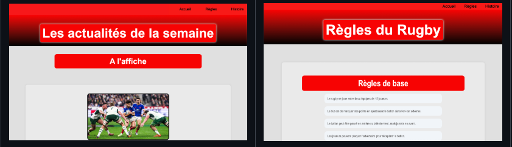
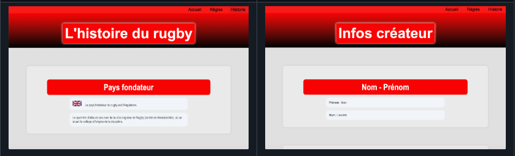
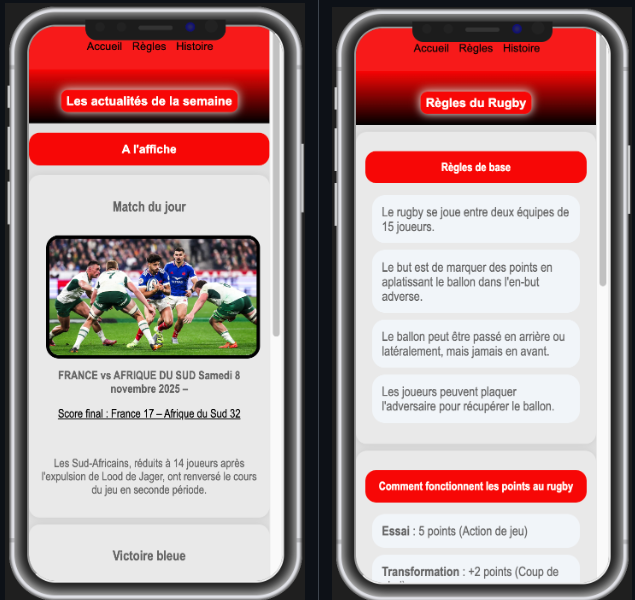
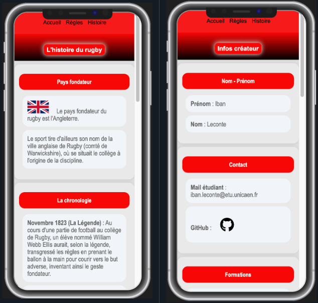
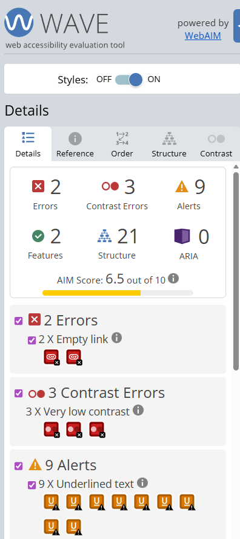
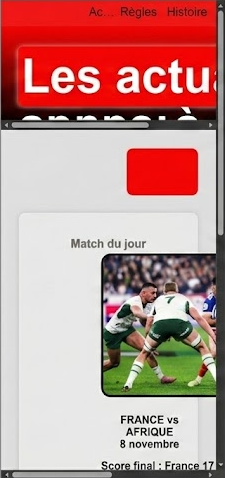
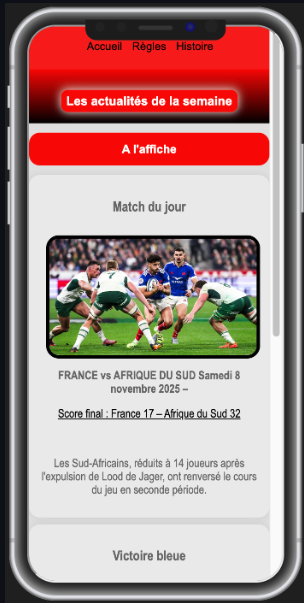

Contexte et travail demandé :
Présentation générale
Réalisée au cours du premier semestre de l'année universitaire 2025-2026 au département Réseaux et Télécommunications, la SAÉ 1.04 (Se présenter sur Internet) consiste à imaginer, coder et mettre en ligne un site internet complet. C'est un exercice de synthèse très formateur qui demande non seulement de programmer, mais aussi d'apprendre à s'organiser de manière rigoureuse.
L'objectif principal était de fabriquer un site moderne et fluide, capable de s'adapter tout seul à la taille de l'écran du visiteur (qu'il utilise un ordinateur ou un smartphone). Le thème de cette création était libre : étant passionné de sport, j'ai choisi de réaliser un site entièrement dédié à l'univers du rugby.
Travail demandé et exigences du cahier des charges
Pour réussir et valider ce projet, je devais suivre des consignes obligatoires très précises :
1. Organisation et structure du site
- Un site à 3 pages minimum : Le site doit être découpé en trois parties. Une page d'accueil visuelle pour donner envie de lire, une page thématique très riche en informations (contenant l'histoire et les règles du rugby), et une page « À propos » pour me présenter.
- Qualité et Accessibilité : Le code doit respecter les règles officielles du web pour être propre et sans fautes. Il doit surtout être accessible aux personnes en situation de handicap (comme les malvoyants ou les personnes qui ne peuvent pas utiliser de souris).
2. Habillage graphique et adaptation aux écrans
- Mise en page moderne : Utilisation d'outils de rangement souples (appelés Flexbox) pour aligner les textes et les images de façon propre et harmonieuse.
- Rendre le site "Responsive" : Concevoir une interface élastique. Quand l'écran devient plus petit (sur un téléphone), les éléments doivent se ranger automatiquement les uns sous les autres pour que l'affichage reste parfait sans avoir à zoomer.
3. Gestion de projet (R1.15)
- Planification : Lister toutes les étapes de fabrication, trier les tâches et créer un calendrier précis à l'aide de tableaux de suivi pour être sûr de rendre le projet à l'heure (avant le 19 décembre 2025).
4. Enregistrement et mise en ligne
- Sauvegardes et Publication : Enregistrer chaque modification du code pour garder un historique clair et publier le site final en ligne sur une plateforme de partage pour que tout le monde puisse le visiter avec un simple lien.
Matières et compétences utilisées
Ce projet m'a permis de lier et de mettre en pratique plusieurs cours du premier semestre :
- R1.09 (Technologies Web) : Pour apprendre à coder les textes et fabriquer les styles visuels de la page.
- R1.15 (Gestion de projet) : Pour apprendre à s'organiser dans le temps et travailler efficacement.
- R1.11 (Expression-Communication) : Pour soigner la présentation visuelle, l'orthographe et rendre la lecture agréable pour le visiteur.
Visuels du site (Mobile & Ordinateur)
Aperçu de l'interface sur différents appareils :


Affichage sur écran large (1024px+) : la navigation se fait horizontalement, le contenu est réparti sur plusieurs colonnes et les éléments respirent avec de grands espaces.


Affichage sur petit écran (< 600px) : la barre de navigation se transforme en bouton tactile, les éléments s'empilent verticalement et tout s'ajuste à la taille du téléphone.
Réalisations techniques
Éléments clés du développement du site Rugby :
Rangement des éléments : J'ai utilisé des systèmes de positionnement souples (Flexbox) pour aligner et centrer tout le contenu (images, blocs de textes, tableaux de scores). Cela évite que les éléments se décalent ou se mélangent de façon désordonnée.
Adaptation automatique : J'ai configuré le code pour qu'il surveille la taille de l'écran du visiteur. Dès que l'écran devient trop petit (comme sur un smartphone), les blocs de contenu se rangent automatiquement les uns sous les autres pour que la lecture reste fluide, sans forcer l'utilisateur à zoomer.
Lien vers le site du projet : Voir le site en ligne
Un code certifié et sans erreur : Mon site a été testé et validé par les outils de contrôle officiels du web (le W3C). C'est la preuve que le code est propre, sans fautes de structure ou de frappe, ce qui garantit qu'il s'affichera correctement sur n'importe quel navigateur (Chrome, Safari, Firefox, etc.).
Structure logique : Au lieu d'utiliser le même type de code partout, j'ai choisi des balises précises qui décrivent exactement le contenu (comme des balises réservées aux titres, aux menus ou aux articles) afin d'aider les robots de recherche à comprendre la page.
Optimisations : Les styles du site sont regroupés de manière organisée, ce qui permet de modifier les couleurs ou l'habillage graphique de toutes les pages en un seul endroit.
Extrait de code Media Queries :
@media all and (max-width: 1024px) {
header {
flex-wrap: wrap;
justify-content: center;
background: var(--primary-color);
color: var(--secondary-color);
padding: 10% 0;
}
nav {
text-align: center;
width: 100%;
margin: 5px 0;
}
.outil {
justify-content: flex-end;
}
.box {
margin: 1.5rem;
padding: 1rem;
}
.haut {
padding: 0.5rem 0.6rem;
margin: 2rem auto 1rem;
}
}
@media all and (max-width: 768px) {
.outil {
justify-content: flex-end;
padding: 0;
}
.outil ul, .outil ul li {
list-style: none;
margin: 0;
padding: 0;
}
.outil ul a {
margin-left: 10px;
margin-right: 5px;
}
.page {
font-size: 1rem;
padding: 0.3rem 0.6rem;
}
.box {
margin: 1rem auto;
padding: 1rem;
font-size: 1rem;
}
.affiche {
width: clamp(120px, 70vw, 400px);
margin: clamp(15px, 4vw, 25px);
}
.haut {
font-size: 1.5rem;
}
.histoire, .propos {
font-size: clamp(1.1rem, 2.5vw, 2rem);
}
}
@media all and (max-width: 600px) {
.box {
margin: 1rem auto;
padding: 1rem;
font-size: 0.95rem;
}
.text {
list-style: none;
width: calc(100% - 1rem);
padding: 0.5rem;
font-size: 0.95rem;
}
.banniere {
width: 100%;
height: auto;
aspect-ratio: 16/9;
}
.text {
width: calc(100% - 1rem);
padding: 0.5rem;
font-size: 0.95rem;
}
.outil {
justify-content: flex-end;
gap: 0.2rem;
}
.outil ul a {
margin-left: 5px;
margin-right: 0;
}
.page {
font-size: 0.9rem;
margin-right: 5px;
padding: 0.3rem 0.5rem;
}
.affiche {
width: clamp(100px, 85vw, 350px);
margin: clamp(10px, 3vw, 20px);
}
.haut {
font-size: 1.2rem;
padding: 0.4rem 0.5rem;
}
.histoire, .propos {
font-size: clamp(1rem, 2vw, 1.5rem);
margin: 0.8rem auto;
padding: 0.8rem;
}
.social-link {
width: 75px;
height: 75px;
margin: 0 2px;
}
.social-link span {
font-size: 41px;
}
.contenu-gris {
padding: 15px 0;
}
}
@media all and (max-width: 480px) {
body {
font-size: 14px;
}
.box {
margin: 0.8rem auto;
padding: 0.8rem;
font-size: 0.9rem;
}
.text {
list-style: none;
margin: 0.8rem auto;
padding: 0.8rem;
}
.affiche {
width: clamp(90px, 90vw, 300px);
margin: clamp(10px, 3vw, 15px);
}
.page {
font-size: 0.85rem;
padding: 0.25rem 0.4rem;
}
.haut {
font-size: 1rem;
padding: 0.3rem 0.4rem;
margin: 1.5rem auto 0.8rem;
}
.histoire, .propos {
font-size: clamp(0.9rem, 1.8vw, 1.3rem);
margin: 0.7rem auto;
padding: 0.7rem;
}
.outil {
justify-content: center;
gap: 0.2rem;
}
.outil ul a {
margin-left: 3px;
margin-right: 0;
}
.social-link {
width: 69px;
height: 69px;
margin: 0 2px;
}
.social-link span {
font-size: 37px;
}
}
@media all and (max-width: 360px) {
.box {
margin: 0.5rem auto;
padding: 0.7rem;
font-size: 0.85rem;
}
.text {
list-style: none;
margin: 0.5rem auto;
padding: 0.7rem;
}
.affiche {
width: clamp(80px, 90vw, 250px);
margin: clamp(8px, 3vw, 12px);
}
.page {
font-size: 0.8rem;
padding: 0.2rem 0.3rem;
margin-right: 3px;
}
.haut {
font-size: 0.9rem;
}
.histoire, .propos {
font-size: clamp(0.85rem, 1.5vw, 1.1rem);
}
.outil {
justify-content: center;
gap: 0.15rem;
}
.outil ul a {
margin-left: 2px;
margin-right: 0;
}
.social-link {
width: 61px;
height: 61px;
margin: 0 2px;
}
.social-link span {
font-size: 33px;
}
}
Les règles de code ci-dessus indiquent au site comment réagir selon la largeur de l'écran du visiteur, en modifiant la taille du texte et la disposition des encadrés pour que tout reste parfait.
Analyse Réflexive
Difficultés rencontrées & solutions
1. Rendre le site accessible à tout le monde
Le problème : Au début, mon site avait de gros défauts pour les personnes malvoyantes. Par exemple, j'avais écrit du texte blanc sur des boutons rouges très clairs, et on ne voyait presque rien à cause du manque de contraste. Aussi, mes boutons d'icônes n'avaient aucun texte écrit à l'intérieur : une personne aveugle qui utilise un outil de lecture vocale entendait juste le mot "bouton" sans savoir à quoi il servait. Pour finir, on ne pouvait pas se déplacer proprement sur la page en utilisant seulement les flèches ou la touche 'Tab' du clavier.
Ma solution : J'ai testé mon site avec un outil de contrôle spécialisé appelé WAVE. Pour régler les problèmes, j'ai foncé les couleurs du fond pour que les textes ressortent de manière bien nette. J'ai ajouté des descriptions invisibles dans le code sur chaque bouton pour que les outils d'assistance des aveugles puissent leur lire l'action (comme "aller à la page d'accueil"). J'ai aussi fait en sorte qu'un encadré lumineux apparaisse autour des boutons quand on se déplace avec le clavier pour qu'on puisse naviguer confortablement sans souris.
Le résultat : Le site est maintenant bien plus facile à lire pour tout le monde, il respecte les règles d'accessibilité et on peut s'y balader entièrement sans souris.
2. Écrire un code propre sans fautes
Le problème : C'est difficile de coder trois pages entières sans faire de fautes d'inattention (comme oublier de fermer une balise de texte). Le risque, c'est que le site s'affiche très bien sur mon propre ordinateur mais qu'il soit complètement décalé ou cassé sur le téléphone ou sur un autre navigateur internet.
Ma solution : J'ai passé tout mon code sur le validateur officiel du web (le W3C) qui liste toutes les petites erreurs. J'ai corrigé toutes les alertes une par une et j'ai trié mon code proprement en utilisant les bonnes balises sémantiques de mise en page (comme des balises spéciales pour les menus ou les articles).
Le résultat : Le code est propre, validé sans aucune erreur, et le site est super stable sur n'importe quel écran.
Ce que ce projet m'a appris
Ce projet m'a permis de valider des compétences importantes :
-
✅ Suivre un cahier des charges :
J'ai respecté toutes les demandes : faire 3 pages cohérentes, adapter le site aux téléphones, mettre des animations au survol et publier le site en ligne.
-
✅ Ranger et trier les informations :
Toutes les infos sur mon site de rugby (les matchs, l'histoire, les règles) sont rangées logiquement pour que le visiteur s'y retrouve tout de suite.
Mon auto-évaluation
Mes points forts : Le site est moderne, la navigation est simple, l'affichage sur téléphone fonctionne bien et le code est propre et facile à modifier.
Mes axes d'amélioration : J'aurais aimé ajouter un peu de code JavaScript pour afficher des scores de rugby en direct ou pouvoir trier les articles. J'aurais aussi pu réduire un peu plus le poids de mes images pour que les pages se chargent encore plus rapidement.
Preuves des difficultés rencontrées
Documentation des défis et des solutions apportées :

Situation : L'outil de contrôle WAVE m'indiquait une note insuffisante (6.5 sur 10) à cause de textes trop clairs sur fond clair, de liens invisibles pour les aveugles et d'une navigation au clavier défaillante.

Correction : J'ai atteint la note maximale de 10 sur 10 après correction : les contrastes ont été renforcés, des descriptions vocales ont été ajoutées pour les boutons et la navigation au clavier est désormais fluide.

Situation : Le site était configuré avec des tailles de blocs bloquées et rigides. Résultat sur un écran de téléphone portable : les textes se chevauchaient, les images étaient coupées et le site devenait totalement illisible.

Correction : Remplacement par des structures fluides et programmation de déclencheurs d'écran. Le site réorganise ses éléments automatiquement en une seule colonne propre et reste parfaitement lisible sur smartphone.